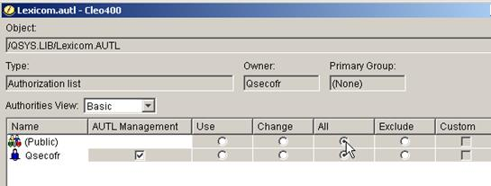

| AS/400 Setup and Installation / AS/400 Install | |
This section will guide you through the procedure required to complete the first-time installation of LexiCom in the AS/400 Integrated File System.
To allow multiple users to successfully run LexiCom and share access to all log and host files (even to those who did not originally create the files) without needing to give "All Object" access to any of these users, an Authorization List may be used to assign Read, Write and Execute privilege to the /LexiCom folder and all of its subfolders. To do this, choose the Security icon in the System i Navigator, select the Authorization Lists item and choose the New Authorization List option.
A screen similar to the following will be displayed. Verify that the All privilege is selected.

CHGAUT OBJ(‘/LexiCom’) DTAAUT(*RWX) AUTL(LEXICOM) SUBTREE(*ALL)
If desired, the System i Navigator may be used to verify that the LexiCom Authorization List has been properly assigned to the /LexiCom Object.
To do this, open the File Systems tree, and expand the Integrated File System entry and then under the Root entry, right-click the /LexiCom folder and choose the Permissions menu item.
For additional information refer to the following IBM resources:
Authorization Lists overview and how to use the Security folder of System i Navigator to deal with authorization lists:
http://publib.boulder.ibm.com/html/as400/v4r5/ic2924/index.htm?info/RBAPKCRTAUTL.HTM System i Security Guide Redbook:
http://www.redbooks.ibm.com/Redbooks.nsf/RedbookAbstracts/sg246668.html?OpenDocument Managing OS/400 with System i Navigator: Security:
Open i5/OS NetServer and create a file share for the LexiCom folder that you created above.
Make sure that the file share has Read/Write access:
Using Windows Explorer, map the new LexiCom file share to any available network drive.
The contents of the shared IFS drive (which will be empty) should appear.
If you have the LexiCom installation CD, click on the install icon in the CD's root directory.
If you do not have the LexiCom installation CD, click on the install.exe file that you downloaded from the Cleo web site.
Start LexiCom (from either the Start menu or by double-clicking the LexiCom.exe application in the /LexiCom IFS folder through Windows Explorer) from your PC and register your serial number. See Register your serial number.
Note: Once you have LexiCom installed into its final production destination, and before the end of your 30-day trial period, you will want to request your Permanent License. See Requesting a Permanent License.
Run the "Software Update" feature in LexiCom to receive the latest program and feature enhancements.
A dialog box appears showing the currently installed version and any newly available releases or patches. View and save the software release notes, if desired and then click Continue to proceed with the software download.
The software download will begin. You will see a continually updated status of the download's progress, allowing you to gauge the amount of time that will be needed for it to complete.
When the software upgrade has completed, verify that the LexiCom.savf file and the jt400.jar files have been installed in the /LexiCom IFS folder and continue to the next section where the necessary portions of LexiCom for the AS/400 will be installed in the Native File System.